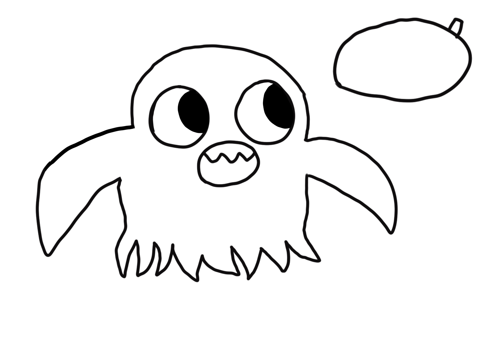

Stuff I'm working on
| Project | Status |
|---|---|
| Comic App | WIP |
| SpaceChecker | WIP |
| Talk with Noelle | WIP |

Hello! I'm SpecterBite, an artist, writer, and programmer. I made a short comic in my free time and I am still working on my novel
| Project | Status |
|---|---|
| Comic App | WIP |
| SpaceChecker | WIP |
| Talk with Noelle | WIP |
Short intro to my OCs
Noelle is a dangerous vampire. Not because she bites anyone or does normal vampire things, but because her bad luck is so bad it ends up causing a citywide disaster. She's kind however.
AJ's a human who doesn't care about anyone but herself. She has really good luck which prevents the karma biting her back. So yes, she's rude
The two aren't related to each other. I haven't gotten around to naming them yet, but I still draw them
Will update here once I get my first novel out